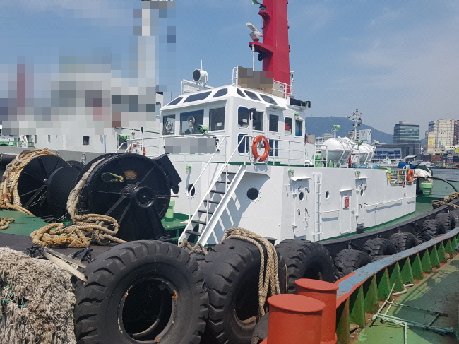

3,200 BHP 187 GRT Harbor Tug Blt 1981 Jp
/ informed by BLUE MARINE CO., LTD.
(18-429)

- BUILT: MAR. 03. 1981 JAPAN
- FLAG/CLASS : KOREA / KST
- L/B/D/draft : 30.66 X 9.50 X 4.30 m / 3.309m
- GRT : 187 t
- GENERATOR : KUBOTA L4D 45EM 100ps X 1200rpm X 2set
- MAIN ENGINE : YANMAR 6ZLUT 1600ps X 730rpm X 2set (TTL. 3200ps)
- PROPELLER : IHI DUCK DP 40E X 2set (DUCK-PELLER SYSTEM)
- BOLLARD PULL : 47.7 t
- CREW COMPLEMENT : 8 P
- TANK CAPA. : FO 32.7, FW 34 m³
- LAST/NEXT SS : APR. 23. 2018 / APR. 22. 2023
- LAST DD : MAY. 2018
- LOCATION : KOREA
Information History
- 180717 : We updated information.
- 180629 : She is available for sale.